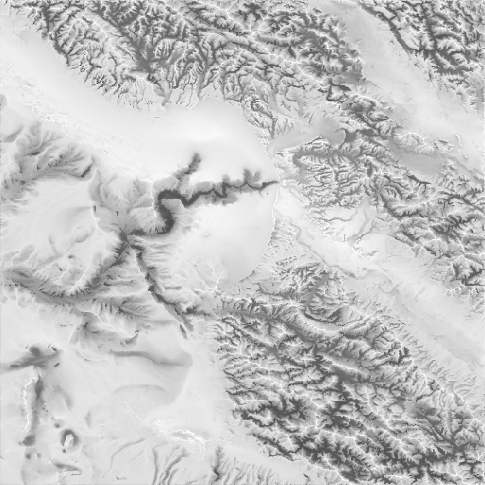
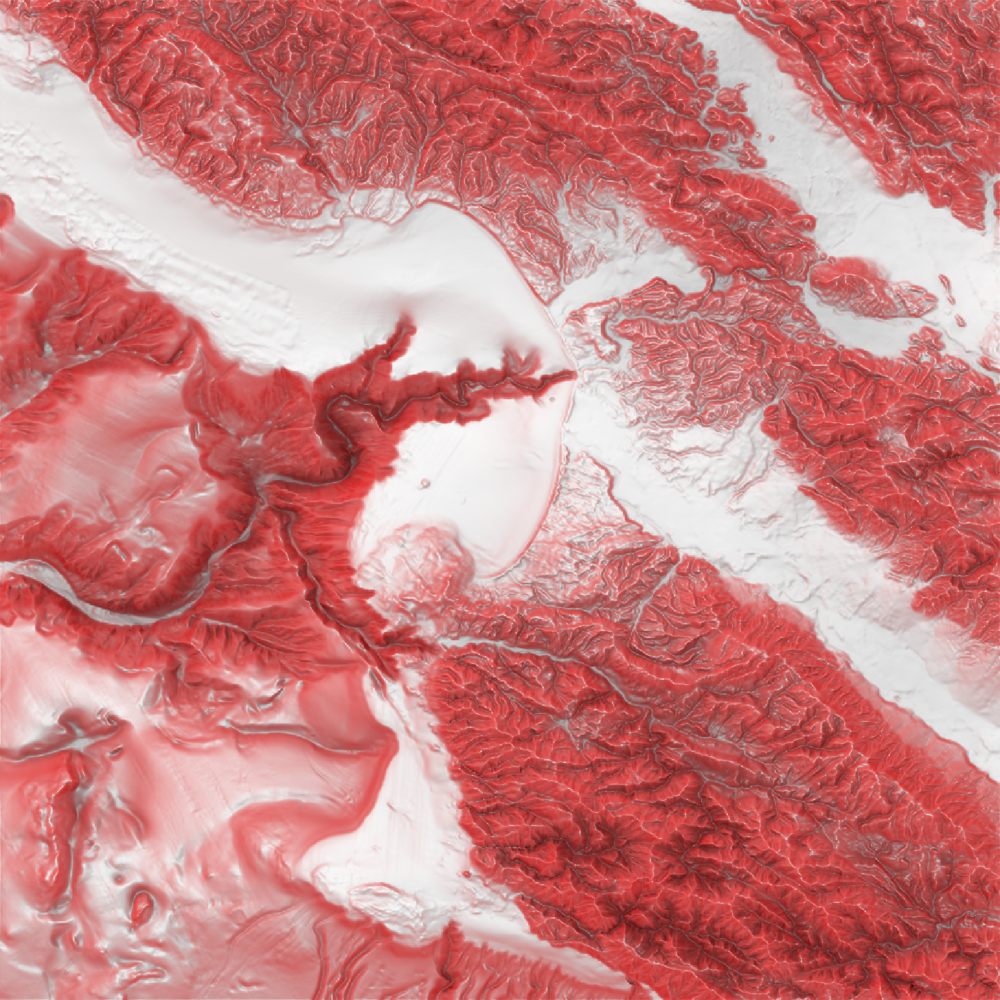

Calculates Ambient Occlusion Shadow Map
ambient_shade(
heightmap,
anglebreaks = 90 * cospi(seq(5, 85, by = 5)/180),
sunbreaks = 24,
maxsearch = 30,
multicore = FALSE,
zscale = 1,
cache_mask = NULL,
shadow_cache = NULL,
progbar = interactive(),
...
)A two-dimensional matrix, where each entry in the matrix is the elevation at that point. All points are assumed to be evenly spaced.
Default `90*cospi(seq(5, 85,by =5)/180)`. The angle(s), in degrees, as measured from the horizon from which the light originates.
Default `24`. Number of rays to be sent out in a circle, evenly spaced, around the point being tested.
Default `30`. The maximum horizontal distance that the system should propogate rays to check for surface intersections.
Default FALSE. If TRUE, multiple cores will be used to compute the shadow matrix. By default, this uses all cores available, unless the user has set `options("cores")` in which the multicore option will only use that many cores.
Default 1. The ratio between the x and y spacing (which are assumed to be equal) and the z axis.
Default `NULL`. A matrix of 1 and 0s, indicating which points on which the raytracer will operate.
Default `NULL`. The shadow matrix to be updated at the points defined by the argument `cache_mask`.
Default `TRUE` if interactive, `FALSE` otherwise. If `FALSE`, turns off progress bar.
Additional arguments to pass to the `makeCluster` function when `multicore=TRUE`.
Shaded texture map.
#Here we produce a ambient occlusion map of the `montereybay` elevation map.
if(run_documentation()) {
plot_map(ambient_shade(heightmap = montereybay))
}

#We can increase the distance to look for surface intersections `maxsearch`
#and the density of rays sent out around the point `sunbreaks`.
if(run_documentation()) {
plot_map(ambient_shade(montereybay, sunbreaks = 24,maxsearch = 100, multicore=TRUE))
}
#Create the Red Relief Image Map (RRIM) technique using a custom texture and ambient_shade(),
#with an addition lambertian layer added with lamb_shade() to improve topographic clarity.
if(run_documentation()) {
bigmb = resize_matrix(montereybay, scale=2, method="cubic")
bigmb %>%
sphere_shade(zscale=3, texture = create_texture("red","red","red","red","white")) %>%
add_shadow(ambient_shade(bigmb, maxsearch = 100, multicore = TRUE,zscale=1),0) %>%
add_shadow(lamb_shade(bigmb),0.5) %>%
plot_map()
}
